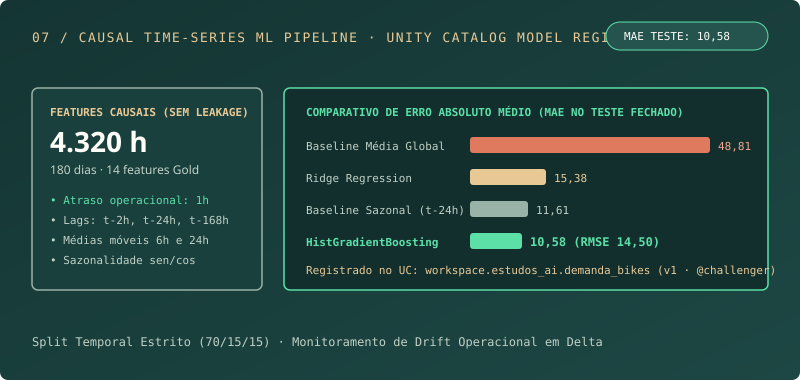

Machine learning · UCI / Kaggle
Previsão de demanda com ML
Pipeline completo de Machine Learning para demanda horária com 14 features causais (atraso de 1h), split temporal estrito, registro no Unity Catalog e monitoramento de drift.

01 / O PROBLEMA
Problema
Estimar a próxima janela de demanda exige reproduzir o que estaria disponível no momento da decisão, sem usar o futuro.
Escopo entregue em produção
Pipeline end-to-end de previsão horária com ingestão Bronze (4.320 horas), Silver, 14 features causais na Gold (respeitando atraso de disponibilidade de 1h), treino comparativo no MLflow, modelo registrado no Unity Catalog (workspace.estudos_ai.demanda_bikes) e monitoramento em workspace.estudos_ops.bikes_monitoramento.
02 / ARQUITETURA
Fluxo do projeto
- 01UCI ou Kaggle
- 02Landing + manifesto
- 03Bronze / Silver
- 04Features causais
- 05Split temporal + treino
- 06MLflow + gate
- 07Inferência + monitoramento
Decisões técnicas
- Escolher uma fonte por versão e não concatenar distribuições potencialmente sobrepostas.
- Excluir componentes do target e clima observado da hora futura das features operacionais iniciais.
- Separar treino e inferência e preservar o baseline se o candidato não demonstrar ganho.
03 / RESULTADOS E LIMITES
O que foi medido
- 4.320
- janelas horárias processadas
- 10,58
- MAE no teste com HistGradientBoosting
- v1
- modelo registrado no Unity Catalog
Execução concluída em 05/11/2026: o HistGradientBoostingRegressor com lags causais (2h, 24h, 168h) reduziu o MAE de teste para 10,579 (contra 48,807 da média global e 11,607 do baseline sazonal). Na validação, a melhoria sobre o baseline sazonal foi de 6,05% (13,452 vs 14,318), documentando a decisão do gate de 10%.
Limites conhecidos
- Melhoria de 6,05% sobre o baseline sazonal na validação (MAE 13,45 vs 14,32), registrado como @challenger pelo gate conservador de 10%.
- Features climáticas utilizam apenas observações passadas respeitando o atraso operacional de 1 hora.
Próximo incremento
- Incorporar calendário de feriados locais e previsão meteorológica exógena versionada.
- Promover modelo de @challenger para @prod após janela adicional de backtesting.
04 / MATERIAL TÉCNICO
Especificação e contratos
Ler documentação completa ↗Regra temporal proposta
text / CONTRATO IMPLEMENTADODecisão: início da hora t; alvo: demanda em [t, t+1h).
Hipótese de replay: a contagem chega 1h após fechar a janela.
Usar apenas valores já disponíveis em t.
Não usar casual + registered: são componentes do target.
Validar features pela grade temporal, não por posição da linha.